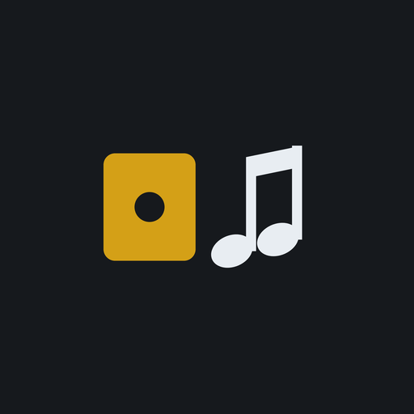
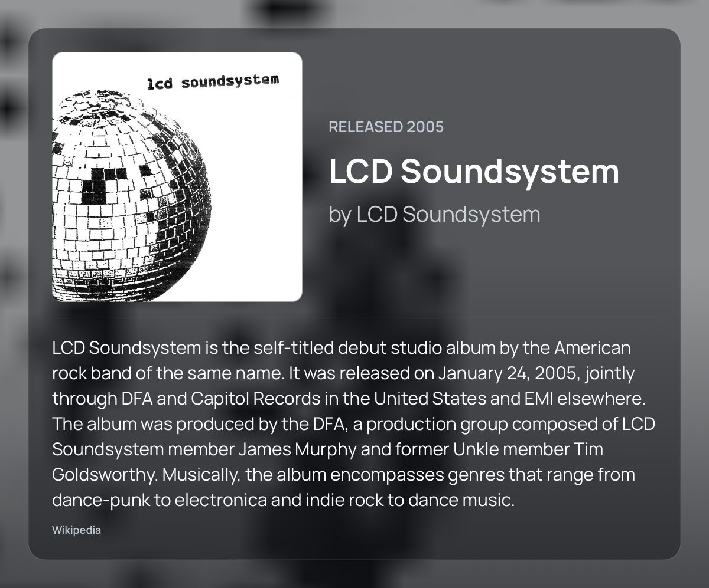
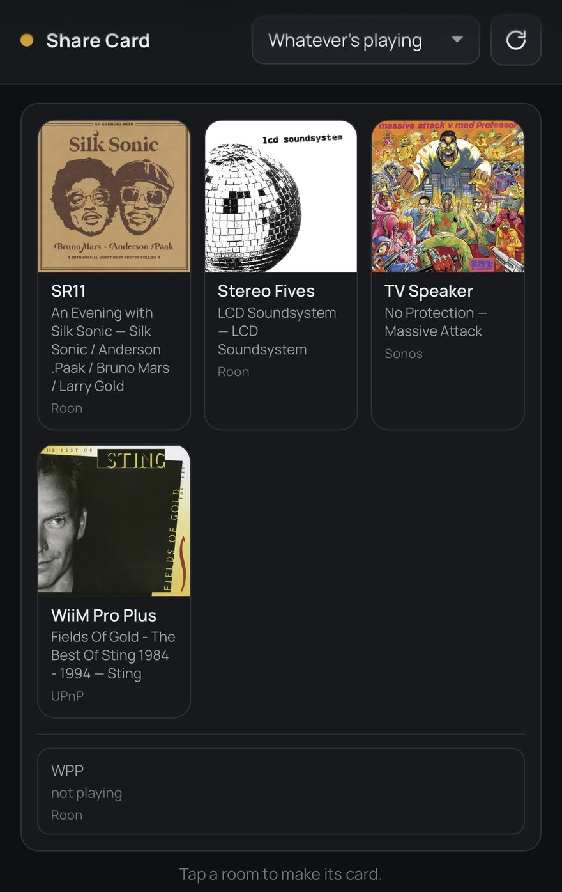
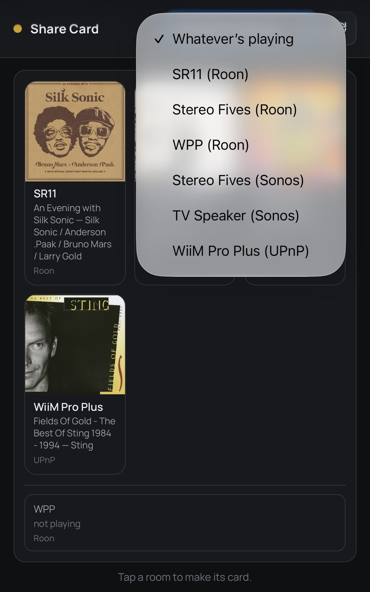
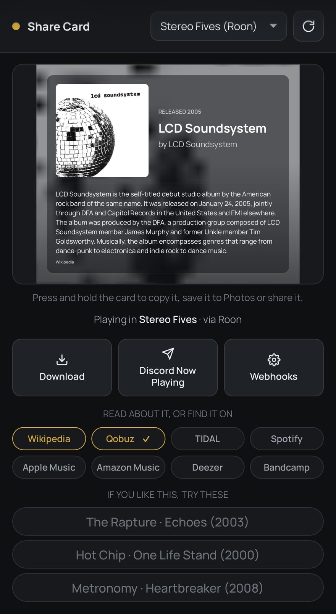

Turns whatever is playing into a card worth sending — cover, title, artist, year, a few lines about the record and a Pitchfork score. Share it, save it, or post it to Discord with a webhook.
Two builds, the same program. Run whichever suits the machine you already leave switched on.
Android 8.0 (API 26) or newer. Your browser will warn you about downloading an APK, and Android will ask permission to install from this source — both are normal for an app that does not come from the Play Store.
docker run -d --name musicd-share-card \ --network host \ -v "$PWD/sharecard-data:/data" \ --restart unless-stopped \ ghcr.io/meltface-80/musicd-share-card:latest
Then open http://<that machine>:8747 on anything on the network.
For a NAS, a Pi, or the box Lyrion is already on — nothing to keep awake, and
nothing to sideload.
--network host is not optional if you want it to find anything.
SSDP, Roon’s SOOD and Lyrion’s broadcast are all multicast, and none of them
cross a Docker bridge — on one, the container comes up healthy and finds nothing
at all.
If that answers denied, the image is private, not
missing. GitHub makes every package private the first time it is
published and only the owner can change it. Until then, clone the repo
and docker compose up -d --build — the same Dockerfile,
built on your own machine.
Three steps each way, once.
http://192.168.0.42:8748. Open that in a browser on an iPhone, iPad or
laptop and you get the same card. On iOS, Share → Add to Home Screen gives it
an icon and opens it without browser chrome.mkdir -p sharecard-data && sudo chown -R 10001 sharecard-data — it
runs as uid 10001, not root. Skip it and the card still draws; it just forgets the
Roon pairing, the webhooks and the metadata cache on every restart, and says so in
the log.docker compose up -d. Open
http://<that machine>:8747 from anywhere on the network — the
same page, served by the same code.-p 8747:8747 instead and name your players’ addresses in
SHARECARD_HOSTS, which needs no multicast.Updating is done in the app, the same as on Android: the page says when
there is something newer and Update downloads it, checks it and restarts into it.
That replaces the app’s own code, not the image underneath — pull a new image
now and then (docker compose pull && docker compose up -d) for JRE and
OS updates. An update that will not start is thrown away on the next restart and the
previous build comes back.
Shot on the phone, not mocked up.




Roon, Lyrion Music Server, Sonos, or any UPnP / DLNA renderer on the network. It asks whichever one actually knows what the record is.
Cover, title, artist and release year, with a few lines about the record and a Pitchfork score where there is one.
The Android share sheet, press and hold on an iPhone, or a plain download on a desktop.
Paste a webhook URL once and a button appears on the card. Tap it and the card is posted — under your own name and picture.
The Wikipedia article and the Pitchfork review behind the card, then Qobuz, TIDAL, Spotify, Apple Music, Amazon Music, Deezer and Bandcamp.
Three acts worth hearing next, an album each. Hold a service chip to pick where they link — no settings screen.
Card, buttons, links and suggestions all fit, and the page does not scroll. The card stays until you ask for a new one.
The same card opens in a browser on anything else on your Wi-Fi. Nothing to install on the iPad.
It notices a newer version, downloads it and asks Android to install it. No reinstalling by hand.
It asks a speaker what is playing when you open the page or press refresh, and at no other time.
One button runs the whole search and reports what answered, what didn't, and the last crash if there was one.